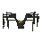
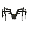
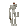
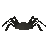
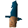
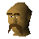
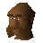
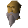

Gnome Ball Field (underground)
Underground area at 2401, 9887 · Kingdom of Kandarin, Underground
Open on the world map → Open in knowledge graph → Surface: Gnome Ball Field
NPCs
| NPC | Level | Spawns | Notable drops |
|---|---|---|---|
 Kalrag | 89 | 1 | |
 Blessed spider | 39 | 32 | |
 Souless | 18 | 53 | |
 Spider | 1 | 50 | |
 Brimstail | 1 | ||
 Kamen | 1 | ||
 Klank | 1 | ||
 Nilhoof | 1 |